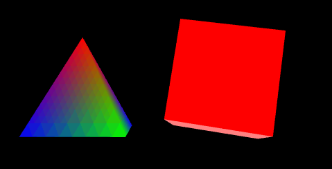

这节我们把三角改成四面体，矩形改成正方体。
效果如图4。

图4
之前几节的图形是一个面，而立体的图形是由多个面组成的，我们一个面一个面地给出顶点坐标，画上去就得到了三维图形。
在绘制正方体的时候，我们增加一个索引。原因是：
为了让变量名更有意义一些，我们先把三角和矩形对应的变量名改成四面体和立方体。比如rTri改为rPyramid，triangleVertexPositionBuffer改成pyramidVertexPositionBuffer等等。
四面体用老方法来画，正方体用点索引的方法（具体方法是随意的，看怎么方便了）。
var cubeVertexIndexBuffer;
增加全局变量，正方体顶点索引的buffer。
function initBuffers()
{
pyramidVertexPositionBuffer = gl.createBuffer();
gl.bindBuffer(gl.ARRAY_BUFFER, pyramidVertexPositionBuffer);
var vertices = [
// 正面
0.0, 1.0, 0.0,
-1.0, -1.0, 1.0,
1.0, -1.0, 1.0,
// 右侧面
0.0, 1.0, 0.0,
1.0, -1.0, 1.0,
1.0, -1.0, -1.0,
// 背面
0.0, 1.0, 0.0,
1.0, -1.0, -1.0,
-1.0, -1.0, -1.0,
// 左侧面
0.0, 1.0, 0.0,
-1.0, -1.0, -1.0,
-1.0, -1.0, 1.0
];
gl.bufferData(gl.ARRAY_BUFFER, new Float32Array(vertices),
gl.STATIC_DRAW);
pyramidVertexPositionBuffer.itemSize = 3;
pyramidVertexPositionBuffer.numItems = 12;
pyramidVertexColorBuffer = gl.createBuffer();
gl.bindBuffer(gl.ARRAY_BUFFER, pyramidVertexColorBuffer);
var colors = [
// 正面
1.0, 0.0, 0.0, 1.0,
0.0, 1.0, 0.0, 1.0,
0.0, 0.0, 1.0, 1.0,
// 右侧面
1.0, 0.0, 0.0, 1.0,
0.0, 0.0, 1.0, 1.0,
0.0, 1.0, 0.0, 1.0,
// 背面
1.0, 0.0, 0.0, 1.0,
0.0, 1.0, 0.0, 1.0,
0.0, 0.0, 1.0, 1.0,
// 左侧面
1.0, 0.0, 0.0, 1.0,
0.0, 0.0, 1.0, 1.0,
0.0, 1.0, 0.0, 1.0
];
gl.bufferData(gl.ARRAY_BUFFER, new Float32Array(colors),
gl.STATIC_DRAW);
pyramidVertexColorBuffer.itemSize = 4;
pyramidVertexColorBuffer.numItems = 12;
对四面体，给出了三维世界中每个面的顶点坐标，相应的numItems也自然和三角的不一样了。
cubeVertexPositionBuffer = gl.createBuffer();
gl.bindBuffer(gl.ARRAY_BUFFER, cubeVertexPositionBuffer);
vertices = [
// 正面
-1.0, -1.0, 1.0,
1.0, -1.0, 1.0,
1.0, 1.0, 1.0,
-1.0, 1.0, 1.0,
// 背面
-1.0, -1.0, -1.0,
-1.0, 1.0, -1.0,
1.0, 1.0, -1.0,
1.0, -1.0, -1.0,
// 顶部
-1.0, 1.0, -1.0,
-1.0, 1.0, 1.0,
1.0, 1.0, 1.0,
1.0, 1.0, -1.0,
// 底部
-1.0, -1.0, -1.0,
1.0, -1.0, -1.0,
1.0, -1.0, 1.0,
-1.0, -1.0, 1.0,
// 右侧面
1.0, -1.0, -1.0,
1.0, 1.0, -1.0,
1.0, 1.0, 1.0,
1.0, -1.0, 1.0,
// 左侧面
-1.0, -1.0, -1.0,
-1.0, -1.0, 1.0,
-1.0, 1.0, 1.0,
-1.0, 1.0, -1.0,
];
gl.bufferData(gl.ARRAY_BUFFER, new Float32Array(vertices),
gl.STATIC_DRAW);
cubeVertexPositionBuffer.itemSize = 3;
cubeVertexPositionBuffer.numItems = 24;
cubeVertexColorBuffer = gl.createBuffer();
gl.bindBuffer(gl.ARRAY_BUFFER, cubeVertexColorBuffer);
colors = [
[1.0, 0.0, 0.0, 1.0], // 正面
[1.0, 1.0, 0.0, 1.0], // 背面
[0.0, 1.0, 0.0, 1.0], // 顶部
[1.0, 0.5, 0.5, 1.0], // 底部
[1.0, 0.0, 1.0, 1.0], // 右侧面
[0.0, 0.0, 1.0, 1.0] // 左侧面
];
var unpackedColors = [];
for (var i in colors)
{
var color = colors[i];
for (var j=0; j < 4; j++)
{
unpackedColors = unpackedColors.concat(color);
}
}
gl.bufferData(gl.ARRAY_BUFFER, new Float32Array(unpackedColors),
gl.STATIC_DRAW);
cubeVertexColorBuffer.itemSize = 4;
cubeVertexColorBuffer.numItems = 24;
代码还是把中正方体每个面的顶点分别给出了，以便给不同的面设置不同颜色，因为一个点有三个相邻面，我们无法给一个点设置三种颜色，但是可以在同一个位置放三个不同颜色的点。
颜色按顶点的顺序对应给出，这个for循环代码的逻辑，思考一下应该会明白。
cubeVertexIndexBuffer = gl.createBuffer();
gl.bindBuffer(gl.ELEMENT_ARRAY_BUFFER, cubeVertexIndexBuffer);
var cubeVertexIndices =
[
0, 1, 2, 0, 2, 3, // 正面
4, 5, 6, 4, 6, 7, // 背面
8, 9, 10, 8, 10, 11, // 顶部
12, 13, 14, 12, 14, 15, // 底部
16, 17, 18, 16, 18, 19, // 右侧面
20, 21, 22, 20, 22, 23 // 左侧面
];
gl.bufferData(gl.ELEMENT_ARRAY_BUFFER,
new Uint16Array(cubeVertexIndices), gl.STATIC_DRAW);
cubeVertexIndexBuffer.itemSize = 1;
cubeVertexIndexBuffer.numItems = 36;
}
索引的设置方法与前面的顶点、颜色类似，只是相应改变了一些参数，如gl.ELEMENT_ARRAY_BUFFER、Uint16Array等。
function drawScene()
{
//...
gl.bindBuffer(gl.ELEMENT_ARRAY_BUFFER, cubeVertexIndexBuffer);
setMatrixUniforms();
gl.drawElements(gl.TRIANGLES,
cubeVertexIndexBuffer.numItems, gl.UNSIGNED_SHORT, 0);
////mvPopMatrix();
}
绘制的时候，四面体依然使用gl.drawArrays()直接顶点数组画。对正方体使用索引来绘制，函数相应改为gl.drawElements()，当然执行绘制函数之前绑定的buffer也要对应IndexBuffer。
这样我们就得到了两个立体的旋转着的图形。